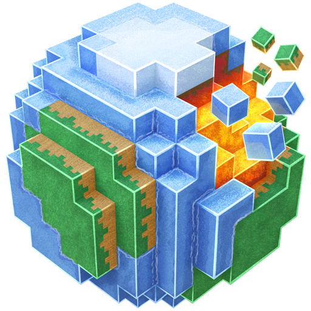

Minecraft біоми — це природні зони, на які світ гри було поділено після оновлення Halloween Update. Біоми становлять собою зони ландшафту з різним рельєфом, рослинами та блоками. До цього оновлення користувач міг задати на створюваній карті певні особливості, наприклад — сніжна або трав'яна карта, однак з появою біомів все це було об'єднано.
